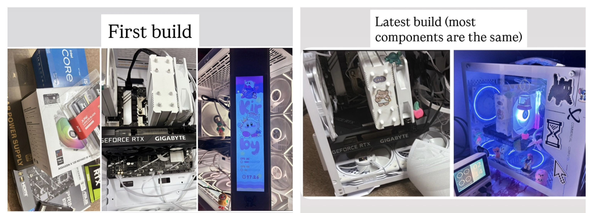
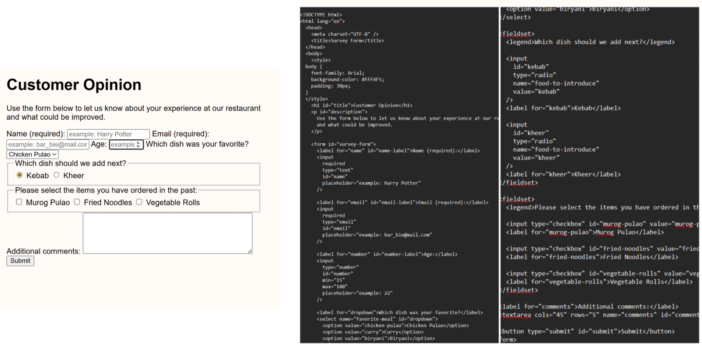

I'm Jubaida (often called Jubie), an aspiring tech enthusiast and learner. On this page, I’d like to share a brief overview of my journey into technology so far.
As a child, I enjoyed watching my father use various Microsoft software for his work, and I would often observe him closely and try things hands-on. Over time, my interest in technology grew stronger. By the time I was in 7th grade, my computer teacher trusted me to help my classmates with their tasks. That experience confirmed my interest in technology and inspired me to continue learning more about it.
I developed an interest in both the hardware and software aspects of technology, especially computer systems. This led me to gather and assemble parts to build my own PC, as shown below:

Below is a short clip of me installing the CPU cooler into the motherboard:
Specifications:
And here are some of the beginner projects that I've worked on so far, mainly using freecodecamp.org.
Here is my work for the Custom Survey Form:

CLICK HERE to view code on GitHub
Thanks for reading!